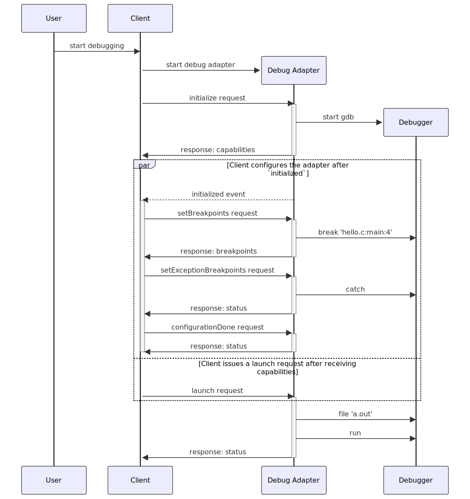
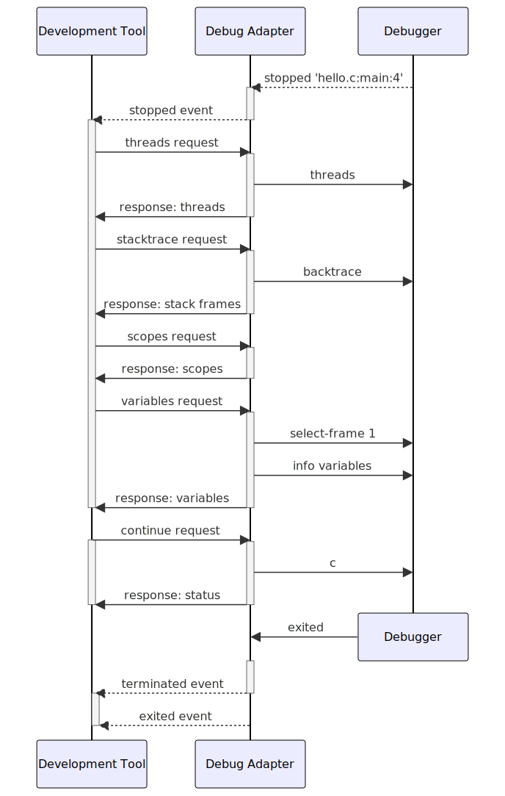

Overview
What is the Debug Adapter Protocol?
It takes a significant effort to implement the UI for a new debugger for features like:
- source-, function-, conditional-, and inline breakpoints,
- variable values shown in hovers or inlined in the source,
- multi-process and multi-thread support,
- navigating through complex data structures,
- watch expressions,
- debug console for interactive evaluation with autocomplete (aka REPL),
- log points.
Typically this work must be repeated for each development tool, as each tool uses different APIs for implementing its user interface. This results in lots of duplicated functionality (and implementation) as visualized by the blue boxes in the following picture:

The idea behind the Debug Adapter Protocol is to standardize an abstract protocol for how a development tool communicates with concrete debuggers.
A similar approach was already introduced in 2016 with the Language Server Protocol which standardized an abstract protocol between an editor or IDE and a server providing “language smartness.”
Since it is unrealistic to assume that existing debuggers or runtimes adopt this protocol any time soon, we rather assume that an intermediary component takes over the role of adapting an existing debugger or runtime API to the Debug Adapter Protocol. This intermediary becomes the Debug Adapter which explains the name of the protocol: Debug Adapter Protocol. The following picture shows the resulting architecture:

The diagram shows that the Debug Adapter Protocol makes it possible to implement a single generic debugger UI per development tool and that Debug Adapters can be re-used across these tools. This reduces the effort to support a new debugger considerably.
Standardizing on a wire-protocol instead of an API and a client library has the advantage that a debug adapter can be implemented in the language most suitable for the given debugger or runtime.
Since the Debug Adapter Protocol was designed for supporting the debugging UI in a language agnostic way, it is fairly high-level and does not have to surface all the fine details of the underlying language and low-level debugger API. The most important data type used in the protocol are strings, because that’s what the end user will see in the UI. So Debug Adapters typically aggregate information received via debugger APIs into high-level, string-based data-structures that are directly consumed in the UI of the development tool. Since this mapping is mostly straightforward and has little complexity, Debug adapters can be developed with minimal effort.
The Debug Adapter Protocol is a win for both debugger/runtime providers and tooling vendors!
How it works
The following sections explains the interaction between a development tool (e.g. IDE or editor) and a debug adapter. This should not only help when implementing the Debug Adapter Protocol in a debug adapter, but also when hosting the protocol in a development tool (sometimes also called “host” or “client”).
Debug Session Start
When a debug session starts, the development tool needs a way to communicate with the debug adapter that implements the Debug Adapter Protocol. How the debug adapter comes to life is not part of the protocol specification, but it is still an important detail if debug adapters should work across different development tools.
A development tool has basically two ways of interacting with a debug adapter:
- single session mode: in this mode, the development tool starts a debug adapter as a standalone process and communicates with it through stdin and stdout. At the end of the debug session the debug adapter is terminated. For concurrent debug sessions, the development tool starts multiple debug adapters.
- multi session mode: in this mode, the development tool does not start the debug adapter but assumes that it is already running and that it listens on a specific port for connections attempts. For every debug session, the development tool initiates a new communication session on a specific port and disconnects at the end of the session.
After establishing a connection to the debug adapter, the development tool starts communicating with the adapter via the base protocol.
Base protocol
The base protocol exchanges messages that consist of a header and a content part (comparable to HTTP).
The header and content part are separated by a \r\n (carriage return, line feed).
Header Part
The header part consists of header fields. Each header field is comprised of a key and a value, separated by ‘: ‘ (a colon and a space).
Each header field is terminated by \r\n.
Since both the last header field and the overall header itself are each terminated with \r\n,
and since the header is mandatory, the content part of a message is always preceded (and uniquely identified) by two \r\n sequences.
Currently only a single header field is supported and required:
| Header Field Name | Value Type | Description |
|---|---|---|
| Content-Length | number | The length of the content part in bytes. This header is required. |
The header part is encoded using the ‘ASCII’ encoding. This includes the \r\n separating the header and content part.
Content Part
The content part contains the actual content of the message. The content part of a message uses JSON to describe requests, responses, and events.
The content part is encoded using utf-8.
integers defined in the protocol (JSON schema type integer) may be represented as 32 bit signed integers, although some properties disallow negative values. numbers in the protocol (JSON schema type number) may be represented as 64 bit floating point numbers.
Example:
This example shows the JSON for the DAP next request:
Content-Length: 119\r\n
\r\n
{
"seq": 153,
"type": "request",
"command": "next",
"arguments": {
"threadId": 3
}
}
Initialization
The Debug Adapter Protocol defines many features and this number is still growing, albeit slowly. However, the protocol is still at its first version because it was an explicit design goal to support new feature in a completely backward compatible way. Making this possible without version numbers requires that every new feature gets a corresponding flag that lets a development tool know whether a debug adapter supports the feature or not. The absence of the flag always means that the feature is not supported.
A single feature and its corresponding flag is called a “capability” in the Debug Adapter Protocol. The open-ended set of all features flags is called DAP’s “capabilities.”
When starting a debug session, the development tool sends an initialize request to the adapter in order to exchange capabilities between the development tool and the debug adapter.
The development tool capabilities are provided in the InitializeRequestArguments structure of the initialize request and typically start with the prefix supports.
Other pieces of information passed from the tool to the debug adapter are:
- the name of the development tool,
- the format of file paths,
nativeoruri, - whether line and column values are 0 or 1 based,
- the locale used by the development tool. A debug adapter is expected to return error messages that honor this locale.
The debug adapter returns the supported capabilities in the InitializeResponse via the Capabilities type.
It is not necessary to return an explicit false for unsupported capabilities.
Launching and attaching
After the debug adapter has been initialized, it is ready to accept requests for starting debugging. Two requests exist for this:
- launch request: the debug adapter launches the program (“debuggee”) in debug mode and then starts to communicate with it.
Since the debug adapter is responsible for launching the debuggee, it should provide a mechanism for the end user to configure the debuggee. For example, passing arguments or specifying a working directory.
- Debug adapters are free to launch the debuggee however they choose. Typically the debuggee is launched as a child process and its output channels are connected to a client’s debug console via output events. However, this has certain limitations, such as not being able to write to the terminal device directly and not being able to accept standard input. For those cases, launching the debuggee in a terminal is preferable. A debug adapter can use the the runInTerminal request to ask the client to launch the debuggee in a terminal that is integrated into the client or in a terminal that runs outside of the client (but still configured and managed from the client).
- attach request: the debug adapter connects to an already running program. Here the end user is responsible for launching and terminating the program.
Since arguments for both requests are highly dependent on a specific debugger and debug adapter implementation, the Debug Adapter Protocol does not specify any arguments for these requests. Instead, the development tool is expected to get information about debugger specific arguments from elsewhere (e.g. contributed by some plugin or extension mechanism) and to build a UI and validation mechanism on top of that.
Configuring breakpoint and exception behavior
Since the development tool implements a generic debugger UI, it is responsible for managing breakpoints and other configurable options like exceptions. This configuration information must be passed to the debug adapter before program execution starts. Some debuggers are able to deal with this information very early, even before the debuggee is known; other debuggers accept this information only when the debuggee is about to start running.
Since the development tool does not know when is the correct moment for passing the configuration information to the adapter, the debug adapter is expected to send an initialized event to the development tool to announce that it is ready to accept configuration requests. With this approach a debug adapter does not have to implement a buffering strategy for configuration information.
In response to the initialized event, the development tool sends the configuration information using these requests:
- setBreakpoints one request for all breakpoints in a single source,
- setFunctionBreakpoints if the debug adapter supports function breakpoints,
- setExceptionBreakpoints if the debug adapter supports any exception options,
- configurationDoneRequest to indicate the end of the configuration sequence.
The setBreakpoints request registers all breakpoints that exist for a single source (so it is not incremental). A simple implementation of these semantics in the debug adapter is to clear all previous breakpoints for the source and then set the breakpoints specified in the request. setBreakpoints and setFunctionBreakpoints are expected to return the ‘actual’ breakpoints and the generic debugger updates the UI dynamically if a breakpoint could not be set at the requested position or was moved by the debugger.
If a debug adapter is unable to apply a breakpoint at the time when it’s first sent, it should mark the breakpoint as unverified using verified: false in the SetBreakpointsResponse. If the breakpoint changes its state at a later point in time, the debug adapter should use the breakpoint event to notify the client.
Launch Sequencing
There are three main building blocks we’ve discussed to create a debugging session:
- Initialization, via the
initializerequest, - Configuration of breakpoints and exceptions during the configuration stage, and
- Starting the debugger, via a launch or attach request.
Initialization happens first, and the debug adapter must respond to the initialize request with any capabilities before any further communication can take place. At any point after the client receives the capabilities, it sends a launch or attach request.
Once the debug adapter is ready to receive configuration from the client, it sends an initialized event to the client. As described above, the client sends zero or more configuration-related requests before sending a configurationDone request.
After the response to configurationDone is sent, the debug adapter may respond to the launch or attach request, and then the debug session has started.
The following sequence diagram summarizes the sequence of requests and events for a hypothetical gdb debug adapter:

Stopping and accessing debuggee state
Whenever the program stops (on program entry, because a breakpoint was hit, an exception occurred, or the user requested execution to be paused), the debug adapter sends a stopped event with the appropriate reason and thread id.
Upon receipt, the development tool first requests the threads (see below) and then the stacktrace (a list of stack frames) for the thread mentioned in the stopped event.
If the user then drills into the stack frame, the development tool first requests the scopes for a stack frame, and then the variables for a scope.
If a variable is itself structured, the development tool requests its properties through additional variables requests.
This leads to the following request waterfall:
Threads
StackTrace
Scopes
Variables
...
Variables
The value of variables can be modified through the setVariable request.
Lifetime of Objects References
Some complex structural objects such as scopes or variables are not returned directly with their containers (stack frames, scopes, variables), but must be retrieved with separate scopes and variables requests based on object references. An object reference is an integer in the open interval (0, 231) assigned to objects by the debug adapter.
To simplify the management of object references in debug adapters, their lifetime is limited to the current suspended state. Once execution resumes, object references become invalid and DAP clients must not use them. When execution is paused again, object references no longer refer to the same objects. This means that a debug adapter can easily use sequentially assigned integers for different objects and reset the counter to 1 when execution resumes.
Variable references not related to the current suspended state, such as those from evaluate requests or in output events, should be preserved as long as feasible for the debug adapter so that the client may later inspect them.
Please note that other object references like threadId do not have limited lifetime because that would prevent something like the pause request from working in the running state.
Supporting threads
Whenever the generic debugger receives a stopped or a thread event, the development tool requests all threads that exist at that point in time. Thread events are optional, but a debug adapter can send them to force the development tool to update the threads UI dynamically even when not in a stopped state. If a debug adapter decides not to emit Thread events, the thread UI in the development tool will only update if a stopped event is received.
After a successful launch or attach, the development tool requests the baseline of currently existing threads with the threads request and then starts to listen for thread events to detect new or terminated threads. Even if a debug adapter does not support multiple threads, it must implement the threads request and return a single (dummy) thread. The thread id must be used in all requests which refer to a thread, e.g. stacktrace, pause, continue, next, stepIn, and stepOut.
Debug session end
When the development tool ends a debug session, the sequence of events is slightly different based on whether the session has been initially “launched” or “attached”:
- Debuggee launched: if a debug adapter supports the terminate request, the development tool uses it to terminate the debuggee gracefully, i.e. it gives the debuggee a chance to cleanup everything before terminating. If the debuggee does not terminate but continues to run (or hits a breakpoint), the debug session will continue, but if the development tool tries again to terminate the debuggee, it will then use the disconnect request to end the debug session unconditionally. The disconnect request is expected to terminate the debuggee (and any child processes) forcefully.
- Debuggee attached: If the debuggee has been “attached” initially, the development tool issues a disconnect request. This should detach the debugger from the debuggee but will allow it to continue.
In all situations where a debug adapter wants to end the debug session, a terminated event must be fired.
If the debuggee has ended (and the debug adapter is able to detect this), an optional exited event can be issued to return the exit code to the development tool.
This diagram summarizes the sequence of request and events for a hypothetical debug adapter for gdb:

Libraries (SDKs) for DAP providers and consumers
To simplify the implementation of debug adapters, there are libraries or SDKs:
- Debug Adapter SDKs for the different implementation languages there is an SDK to implement a debug adapter in a particular language. For example, to implement a debug adapter using Node.js there is the debug adapter npm module.